The Quick Twitter Palette
REQUIRES MAC OS X v10.7 or newer
Here's an easy-to-create service that will present a floating HUD palette displaying the mobile (iPhone) version of the Twitter website, allowing you to instantly access and contribute to your Twitter account!
STEP 1 • Open a New Services Workflow
New services are created using the Automator application located in the Applications folder on your computer. Double-click the icon of Otto the automation robot to open Automator. Select the Services template from the template chooser sheet in the forthcoming workflow window.

Click the OK button in the sheet, and a service workflow will be opened.
STEP 2 • Set the Input Settings
A gray bar will be displayed across the top of the workflow area of the Automator window. This bar displays the settings that indicate (1) the type of data to be processed by the workflow, (2) the application in which the service will be available, and (3) whether or not to replace any selected text with the result of the service workflow.
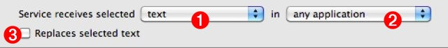
For this example, the workflow will present a floating HUD window displaying the mobile version of the Twitter website. The service will require no input and should be available any time and from within any application. Accordingly, these should be the settings for the input dialog in the workflow:
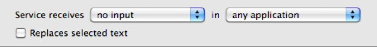
STEP 3 • Add Actions
Now that the input settings have been applied, you can build the service by adding Automator actions to the workflow. The first action should be one for providing the Internet address or URL of the Twitter website to the workflow. Locate the appropriate Automator action for this task, by entering the keywords “web” and “URL” into the search field to the left of the data input bar. A list of internet-related actions will be displayed in the action list below the search field. Drag the title of the Get Specified URLs action to the area after the data settings bar, and release the mouse to add the action.
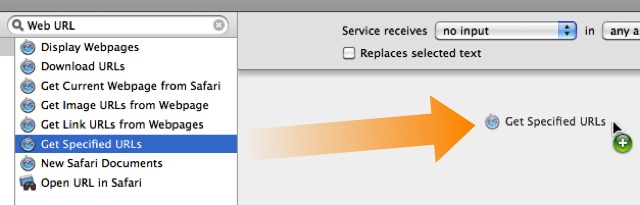
Once the mouse is released, the action will be added to the end of the workflow, and its action view will be displayed. The action view contains any setable parameters used by the action to perform its role in the workflow. The Get Specified URLs provides the workflow with a list of URLs entered in its action view. By default, a single URL to the Apple website is provided. You can edit this URL by double-clicking on the existing URL and replacing it with the full URL of the Twitter website, which is: http://twitter.com
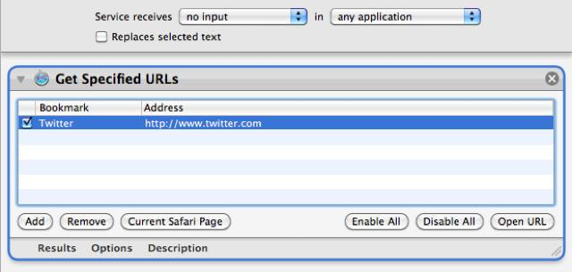
The next action in the workflow will be one that displays the URL provided by the Get Specified URLs action. Locate the appropriate Automator action for this task, by entering the keyword “website” into the search field to the left of the data input bar. A list of related actions will be displayed in the action list below the search field. Drag the title of the Website Popup action to the area at the end of the workflow, and release the mouse to add the action.
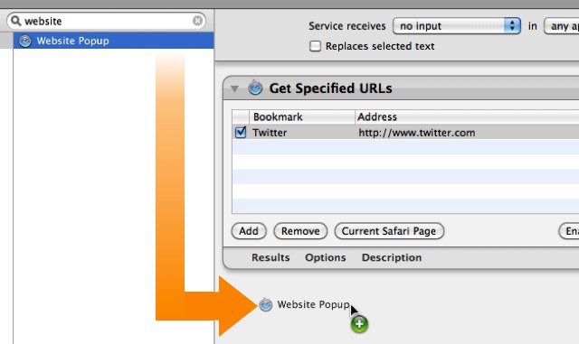
The Website Popup is designed to display a floating HUD window, showing the website whose URL is passed from the previous action in the workflow. Its action view contains parameters for: (1) indicating the size of the floating window; (2) whether the content of the website is viewed as from within Safari, or from within the iPhone; (3) the HUD's default postion on the screen; and (4) what type of information is returned by the action after the HUD is closed or dismissed.
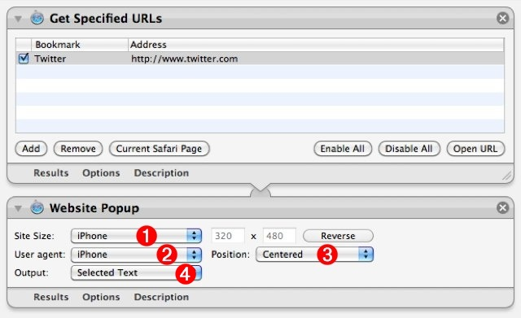
Set the action's parameters to display the website content as an iPhone, in a centered floating HUD whose dimensions are the same as the screen resolution of an iPhone. Since the input for this service workflow does not require text input, leave the data type for the action result as: Selected Text
STEP 4 • Save the Service
Choose Save from Automator's File menu and in the drop-down naming sheet, enter the name for this service: Quick Tweet
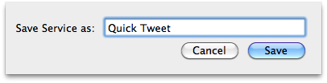
The service is automatically installed into the Services framework for the current user. You may now close the automator window and quit Automator.
STEP 5 • Assign Keyboard Sortcut
The final step in creating and setting up this workflow, is to assign a keystroke combination to the newly created service. Open the System Preferences application and navigate to the Keyboard preference pane, and select the Keyboard Shortcuts tab. From the list on the left of the preference pane, select the Services category. A list of the installed services will be displayed to the right. Locate the Quick Tweet service in the list, select it, and press the Return key to activate the keyboard input cell. Type the key combination you wish to assign to the service (maybe: Control-Shift-T), then quit the System Preferences application.
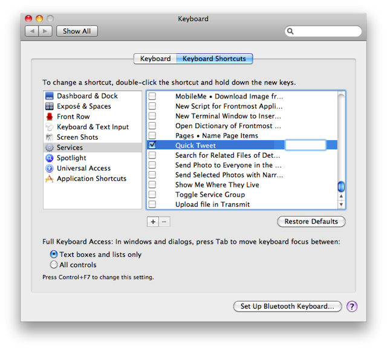
STEP 6 • Using the Service
This service is designed to give you quick access to Twitter without the need for relying on a full-sized web-browsing application. To summon the HUD, simply type the keyboard shortcut you assigned to the service, and login when the mobile version of Twitter appears:
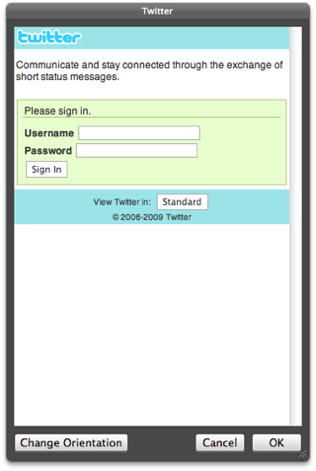
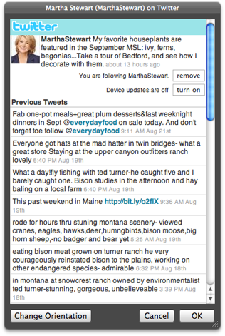
(left) Twitter mobile log-in page. (right) Active Twitter session.
NOTE: Once you have logged into your Twitter or Facebook accounts, you remain logged in even if the HUD is dismissed. If you summon the HUD after is has been previously dismissed, your session will still be active. To stop the current session, log out in the HUD window.
The design of this service can also be used with other social-media websites, such as Facebook. To create a quick viewer for Facebook, copy the steps used to create this service, replacing the URL for Twitter with the URL for Facebook:
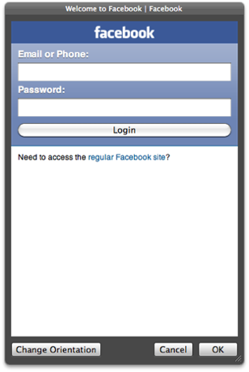
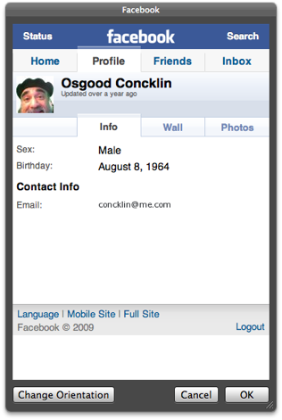
(left) Facebook mobile log-in page. (right) Active Facebook session.
Summary
Congratulations! You've created a service for that keep you in touch with the world. Oh you Power-User you ;-)